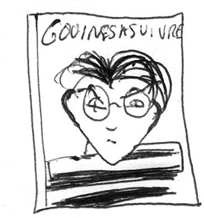

Martha Salimbeni – sélection
Paris, France
Graphiste indépendante, artiste,
Co-fondatrice de la revue M.E.R.C.U.R.E.
Enseignante à l’ISBA, Besançon
Kébra, Le zonard des étoiles, Tramber et Jano, 1983
[hors sélection]
Je commence par Kébra, totalement hors-jeu puisque sorti en 1983 mais utile pour introduire cette sélection de BD. J’adorais les aventures de ce rat pourri quand j’étais petite, j’aimais son look, sa façon de parler, celle d’une « racaille » des années 80, à l’époque on les appelait les « Blousons noirs ». Kébra est un très petit punk pas bien malin, sa vie est une succession d’embrouilles, mais il évolue dans un monde éloquemment dessiné. Les typos des titres et les décors sont fascinants de détails et de style, encore aujourd’hui je les regarde minutieusement. Chaque case des BDs est une cascade de motifs où s’enchevêtrent avec une certaine densité un flipper du futur, le comptoir géométrique d’un bar en Formica, des éclaboussures gluantes, un vaisseau spatial composite, des clopes écrasées, une Vespa rose bubblegum… Le dessinateur de Kébra est Jano, son scénariste est Tramber. J’ai suivi les BDs du duo pendant quelques années, même si je m’identifiais davantage à Kébra qu’aux quelques personnages féminins de la BD, j’étais progressivement de moins en moins à l’aise avec le caractère misogynie de quelques histoires. Ce que j’avais initialement pris pour de l’humour « rock’n’roll » ou « provoquant » n’était en fait qu’un gimmick discriminatoire redondant dans les BD désignées comme subversives dans les années 80, je pense notamment à celles publiées dans les revues Métal Hurlant et Fluide Glacial.
Au début des années 2000, on m’offrait « Bonjour les Indes », un carnet de voyage réalisé par Jano en collaboration avec Dodo et Ben Radis, un autre duo de dessinateur.trice.s de la même génération que lui. Ce livre m’a déplu, son contenu est occidentalo-centré, la lisière du racisme est franchie. les quatre ami.es visitent plusieurs villes en Inde avec un certain mépris de leurs populations et une attitude clairement décomplexée par rapport à la défonce et à la prostitution, triste consommation locale du touriste blanc. Berk. Depuis je ne suis plus du tout ce qu’ils font.
Cette invitation à mettre en lumière une sélection de mes BDs préférées m’a entrainée dans une rétrospective de mon parcours de lectrice, d’où cette initiative de l’introduire par Kébra, qui fut à la fois l’origine de mes émois pour cet art, et est aujourd’hui l’exemple paradigmatique de ce que je pourrais lui reprocher. Je n’ai plus le même regard qu’il y a 20 ans. Depuis j’ai fait mon coming-out, et mes engagements militants contre la misogynie, l’homophobie, le racisme et toutes formes de discrimination ont tissé un filtre qui a transformé mon intérêt pour un certain nombre de productions de BD.
The killing Joke, Allan Moore, Eaglemoss, coll. DC Comics, 2016
J’ai toujours aimé l’environnement dark des aventures de Batman avec une forte préférence pour le personnage du Joker. Il ne cambriole pas des banques pour s’enrichir mais pour semer le chaos. Au regard du potentiel narratif offert par le personnage, des auteurs talentueux ont écrit son histoire. La plus réussie, selon moi, est The Killing Joke, scénarisée par le singulier auteur britannique Allan Moore. Ce dernier a une écriture fine et extrêmement documentée qui révèle ses engagements sociaux et politiques.
Il y a une anecdote amusante autour de The Killing Joke. Pour sa première publication chez DC Comics en 1988, le dessinateur Brian Bolland a subi un grand désaccord artistique avec le travail du coloriste John Higgins. La BD est une explosion de couleurs vives, certaines planches sont psychédéliques, l’encre n’est pas toujours appliquée en respectant les contours subtils et précis des dessins de Brian Bolland. Ce conflit artistique a été apaisé pour la réédition de The Killing Joke par Urban Comics en 2014, Une refonte totale des couleurs a été opérée, créant une atmosphère plus sombre, seules quelques pointes de rouge vif apparaissent pour souligner le rire dément du Joker. Personnellement je préfère largement la première version colorée psychédélique qui crée une rupture avec le caractère psychologique des personnages.
Batwoman, tome 4, J.h. Williams III et trevor mccarthy, urban comics, 2015
Pour rester dans le registre du DC Comics, il y a quelques années, un personnage inattendu est apparu au cœur de cette production massive : Batwoman. Contrairement à la super-héroïne d’origine, cette fois-ci Kate Kayne était lesbienne. Contrairement aussi au profil de représentation habituel des femmes homo dans le paysage culturel, et bien que les deux auteurs soient des hommes (donc potentiellement pas idéalement placés pour parler des lesbiennes), les aventures amoureuses de Batwoman semblaient réellement destinées à un public homo et non pour satisfaire les fantasmes de jeunes hommes hétéros. Qui plus est, les dessins et les compositions des planches sont réussis et très soignés. En outre, il est dommage de constater à la lecture qu’hormis cet effort notable de représentation, les auteurs n’ont pas étendu leur audace sur davantage d’aspects du comic-book. Le scénario est éhontément pro-militariste, une atmosphère patriarcale ombrage sérieusement la protagoniste, et le caractère ambigüe de l’héroïne qui cherche à faire justice elle-même, alors qu’elle n’en a aucune légitimité légale, n’est que faiblement interrogé.
L’Essentiel des gouines à suivre, Tome 1, Alison Bechdel, Même Pas Mal, 2016
Cette fois-ci, et le titre de la BD est suffisamment parlant, il s’agit d’une BD écrite et dessinée par une lesbienne. Jamais la censure n’a entravé son scénario, la série était publiée sous forme de planches ou de strips dans des magazines féministes et lesbiens pendant les années 80-90. L’essentiel des gouines à suivre recueille une série de BDs qui dépeint la vie d’un groupe d’amies vivant à San Francisco dans les années 80. Leur quotidien met en lumière une trame de fond narrative résolument militante au sein des circonstances politiques de l’époque. De nombreux aspects me sont apparus encore d’actualité. Ses BD ne sont généralement pas en tête de rayons, même dans les librairies indépendantes où j’ai l’habitude de me rendre. Les histoires sont compilées en plusieurs tomes dans de très beaux petits livres au format singulier : une lecture en paysage, pour suivre les dimensions des strips de leurs publications d’origine. Les livres sont de facture humble, les pages intérieures sont imprimées en noir et blanc sur du papier type pulps, et assemblées sous une couverture souple très colorée.
Je reviens sur l’édition française publiée en 2016 par Même pas mal pour soulever un élément qui m’est apparu très intéressant. À l’occasion de cette compilation, Alison Bechdel a rédigé une préface dans laquelle elle explique son parcours d’autrice de BD, comment elle en est venue à modifier sa façon de dessiner et à raconter sa vie. Initialement elle dessinait uniquement des personnages masculins et son travail d’écriture existait de façon dissociée de sa pratique du dessin, la connexion entre les deux disciplines s’est faite à partir du moment où elle a dessiné des femmes.
Happy Fucking Birthday, Simon Hanselmann, Misma, 2017
L’arrivée des BDs de l’auteur australien Simon Hanselmann m’est apparue comme une rafraîchissante offrande néo-punk ; les dessins étant mis en œuvre avec un talent minutieux dans le trait et la colorisation, le style graphique est presque classique. La série raconte les aventures de Megg, Mogg et Owl, respectivement une fille un peu dark habillée d’un costume de sorcière, un petit chat et un hibou en cravate. Tous les trois sont colocataires (Megg et Mogg sont en couple) et ce sont d’infinis loosers. Ils passent leur temps à se défoncer, bénéficier des effets de toutes sortes de drogues, parfois les subir, s’essayer à des expérimentations sexuelles extravagantes, puis chercher de la came ou de la nourriture quand tout a été consommé. Le synopsis peut sembler inconsistant, mais pourtant il se passe beaucoup de choses dans les « entre-cases » de cette œuvre trash pseudo-nihiliste.
Avant tout, un climat allant au-delà même du queer habite presque chaque récit, le compagnon de Megg est un petit chat, elle craque aussi un peu pour son amie Booger, une fille cool à la peau recouverte d’écailles. Le voisin et ami Werewolf est le plus fou, obsédé et drogué des protagonistes de la BD, Simon Hanselmann en a fait l’unique personnage qui a une famille, il élève seul deux jeunes fils. Le personnage de Owl pourrait incarner l’élément de censure dans le récit, il exprime l’envie de « faire les choses bien », nettoyer la maison, arrêter de se défoncer, signaler les moments où les choses vont trop loin, mais sa récalcitrance transpire le fallacieux et rend le personnage agaçant. Une anecdote dit que le jaune du bec de Owl est une recette d’encre secrète conçue à base de jaune d’œuf pourri.
Étant donné le contenu des BD, j’avais imaginé Simon Hanselmann comme quelqu’un de sinistre, tout le temps défoncé et peu aimable. En effet, je pense que chacun de ses personnages incarne une partie de lui, poussée à l’excès. Simon Hanselmann est en réalité un individu d’une délectable étrangeté, j’ai eu l’occasion de le rencontrer au cours d’une expo de ses dessins à la galerie Martel à Paris, il était admirablement maquillé avec des taches de rousseur dessinées au crayon marron sur ses joues, il portait une robe rouge style années 50, des chaussures noires un peu SM à talons aiguilles et une perruque rousse coiffée comme les cheveux de Megg avec une grande mèche. Sa femme était là, ils sont tous les deux très doux et sympas, ils formaient un couple magnifiquement gender-fluid, je les ai trouvé super cool.
Patience, Daniel Clowes, Cornélius, 2016
La première BD que j’ai lu de l’auteur américain Daniel Clowes était Ghost World, l’histoire de deux lycéennes, Enid et Rebecca, qui s’ennuient dans leur ville. Elles cherchent à rompre la monotonie du mainstream qui les entoure en analysant scrupuleusement chaque élément un peu étrange qui se présente sous leurs yeux. Le récit est construit autour de leurs extrapolations des détails singuliers qu’elles rencontrent, de leur mélancolie du monde et de leur difficulté à y trouver leur place. Dans sa préface, Daniel Clowes explique qu’aucune de ses amies ne ressemble aux femmes qu’il voit dans les médias, les livres et les films. Dans Ghost World, il a cherché à mettre en lumière des profils de femmes moins stéréotypées et, selon lui, plus réalistes et plus intéressantes. Daniel Clowes est un individu discret, presque taciturne, il ne s’est jamais revendiqué militant et pourtant je pense que son travail témoigne subtilement qu’il l’est. Il a une façon bien à lui d’évoquer les dissonances de ce monde, les situations inéquitables et difficiles, avec un procédé poétique d’une grande sobriété. En 2016, le festival de BD d’Angoulême a fait scandale car il n’y avait aucune femme autrice parmi les trente albums en compétition pour le Grand Prix. Daniel Clowes, invité en tant que membre du jury, a démissionné, sidéré par cet « oubli » clairement sexiste.
Patience est sa dernière BD, ma préférée (non pas parmi ses BDs mais parmi toutes les BDs que j’ai lues dans ma vie). Comme toujours, la ligne claire rétro de Daniel Clowes est remarquable, à première vue tout paraît raide, presque figé, et pourtant le moindre personnage, même en arrière-plan, est doté d’une saisissante puissance expressive. Les profils psychologiques des personnages sont délicatement exposés, avec une grande économie de mots et beaucoup de mélancolie. À nouveau Daniel Clowes s’amuse avec le dessin de lettres, notamment pour les titres. Chaque élément typographique est toujours très soigné, du graffiti sur un mur à l’enseigne d’un supermarché, en passant par le logo d’un café imprimé sur une serviette en papier. Quand on ouvre Patience, à première vue les couleurs vives ne traduisent pas vraiment le contenu du récit. Daniel Clowes est très inspiré par les BDs qu’il lisait enfant et ado, sa colorimétrie franche et son style graphique traduisent cette influence. Comme dans la première édition de The Killing Joke, ceci ajoute une dissonance plutôt juste par rapport au récit. Les premières maisons d’édition françaises qui ont traduit et publié Clowes atténuaient la vivacité des couleurs (l’édition française de Ghost World parue chez Vertige Graphique est bien plus pâle par rapport à l’édition originale). Depuis qu’il est publié par Cornélius, plus rien n’est dénaturé.
Revue Bien, Monsieur, Elsa Abderhamani & Juliette Mancini, 2018
J’ai souhaité commencer par Kébra et clôturer avec Bien, monsieur pour traduire mon cheminement, là où j’en suis aujourd’hui dans ma vision du monde, et pour finir en beauté. La revue Bien, Monsieur recueille des BD d’auteurs et d’autrices indépendant.e.s, chaque numéro prodigue un axe thématique à caractère social qui permet aux intervenant.e.s d’exprimer leur approche politique de la problématique ciblée. L’expression des points de vue de cette nouvelle génération d’auteur.trice.s est vraiment rafraîchissante, car force est de constater que les thématiques récurrentes des BDs indépendantes francophones ont quelque peu stagné dans une expression humoristique du subversif par le trash scato-myso borderline raciste.
À quelques rares exceptions près, elles sont le plus souvent réalisées par des hommes blancs, je trouve que le focus des blagues et leur mode d’expression n’ont pas évolué outre mesure depuis les revues Hara-Kiri et Fluide Glacial qui commencent sérieusement à dater, et me donne le sentiment de ne pas en être « l’heureuse » destinataire. La revue Bien, Monsieur (comme Lagon, Mould Map, ClubHouse et beaucoup d’autres) fait partie d’un vent de nouveauté en termes de création de BD indépendante, elle témoigne que le monde a changé, par conséquent les problématiques aussi. Elle offre une vision de l’actualité plus ouverte, plus inclusive, plus poétique et intersectionnelle. L’humour et la dextérité dans le dessin ne sont plus les uniques outils employés. Chaque numéro révèle les possibles de nouvelles associations bichromiques.